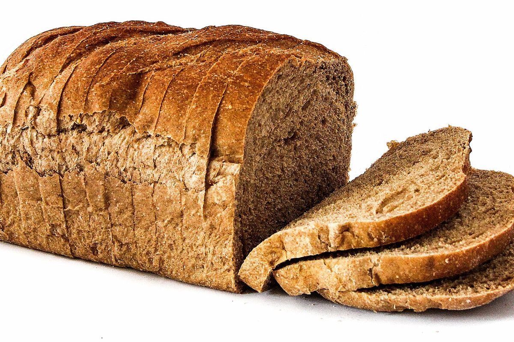

店のこと
店のこと
お店について確認できているのは、所在地・電話番号・Instagramのアカウントです。
「想像してみる」の部分は、制作側が想像して書いたものです。お店の実際の様子・考え・商品とは関係がありません。
確認できていること
- 店名は「ブーランジェリー コパン」、業種はパン屋
- 所在地は島根県松江市宍道町白石34(〒699-0402)
- 電話番号は 0852-66-3132
- Instagramアカウントは @copan_1020
- 営業時間・定休日・メニュー・価格・ご予約・駐車場は準備中
想像してみる
制作側の想像です。「コ」と「パン」を左右に置き、シーソーの板を渡してみました。どちらの端にも同じ重さの楽しみがのっている、そんな絵を思い浮かべながら、このページをつくっています。
イメージ
焼き色の濃い方、淡い方
濃い側撮影地不明のイメージ

淡い側
撮影地不明のイメージ